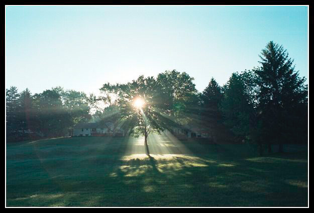
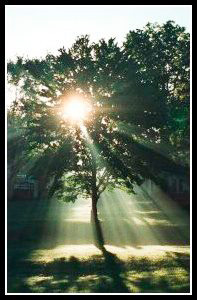
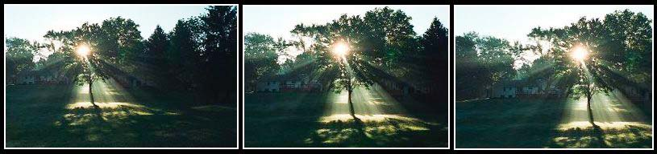
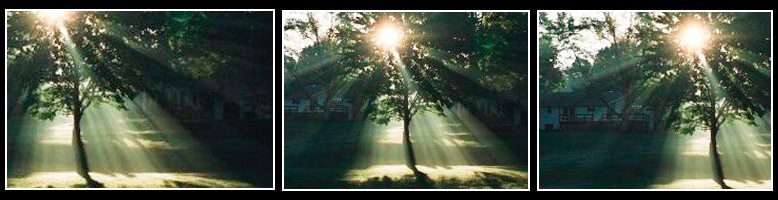

|
Composition in the Field for the Art PhotographerVersion 1.1, Page 7, ©2001 by Dale Cotton, all rights reserved Cropping in the Field (continued)Which brings us right back to the first bullet about honing your compositional instincts at home. Let's say you've come across this scene:  Figure 7. 42-13 Looks pretty promising to me. There ought to be a keeper in there somewhere. Presumably it will include the sun shining through the maple. The colours are iffy, but that's a problem for the darkroom. Clearly you don't have much time to ponder. A quick dash towards the maple shows that the composition fragments into uninteresting pieces closer in; ditto with moves to left and right (which eliminates changes in perspective). Back at the original position it then becomes a question of how long a focal length (angle of view). The obvious and quite possibly best picture may be to crop away everything but the heart of the action: the sun and the maple:  Figure 8. Crop 1 - Or possibly in a little tighter, either by a longer focal length or moving slightly closer in. This certainly looks decent, so it's worth grabbing. Next, you have to consider that you may regret throwing away the spread of the sun rays to left and/or to right. Maybe all or part of the houses are keepers. A conservative crop along those lines might take any of the following three forms - sun left, sun centre, and sun right:  Figure 9. Crops 2, 3, and 4 For me Crops 2 and 4 fragment; the dark areas on the right of Crop 2 and the left of Crop 4 aren't tied to the rest of the frame. I would have abandoned them without a shutter click. Crop 3 seems graceful, so I would probably have taken it … but all the time in a near panic that the sun rays will change to something less effective as the sun rises. If time remains, try a closer crop again, but this time in landscape instead of portrait orientation:  Figure 10. Crops 5, 6, and 7 Again, we try sun left, sun centre, and sun right. All seem to work, so click three times. Finally, there is an important shot, you might not even think to take: the original wide angle (Figure 6). This is the scene that caught your eye in the first place. It's worth preserving as sort of a reference point to aid in selecting among the closer crops, but more importantly it will allow you to practice cropping at home without the urgency of changing light. If you find that the killer crop was one you didn't take, hopefully the emotional hit of that realisation together with the practice will better prepare your instincts for the next occasion. |
| - 7 - |